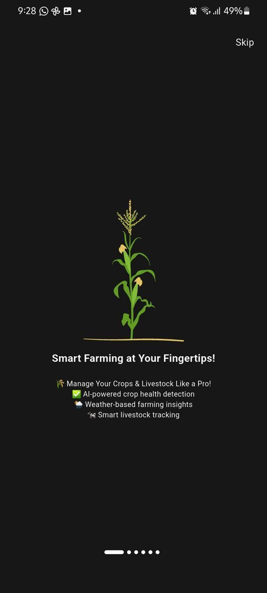
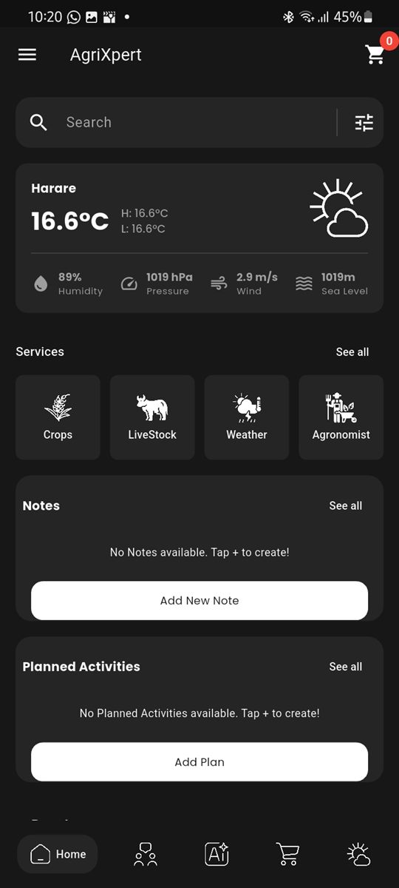
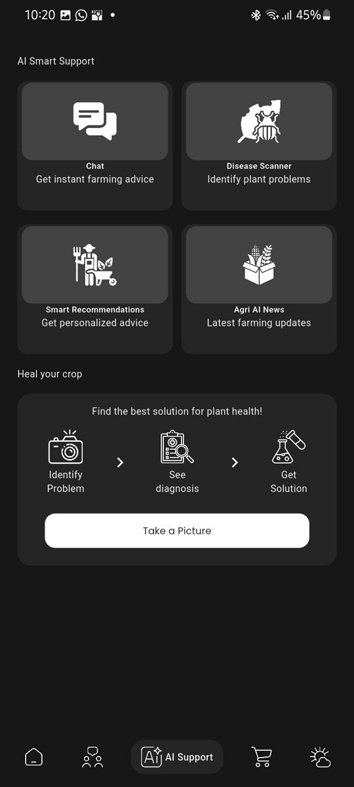
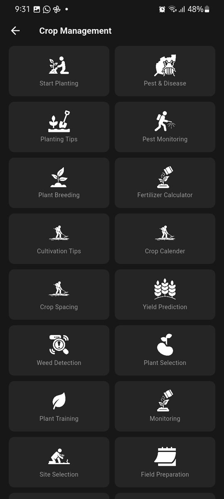
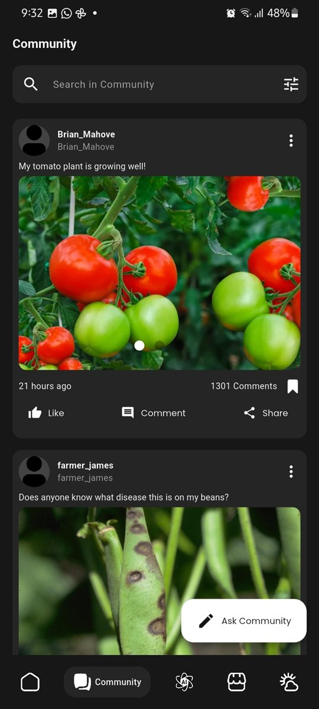
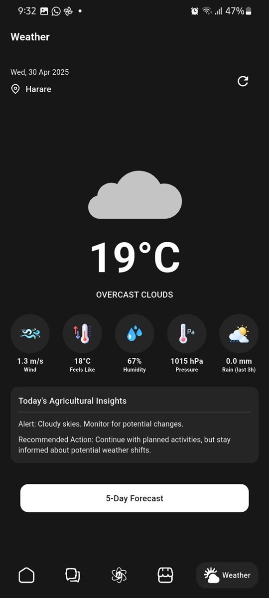
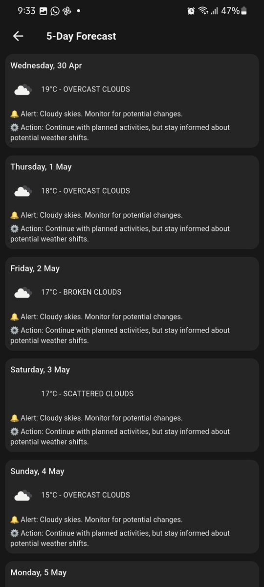

Free tiers only
Accounts, posts, orders and jobs run on Firebase's free plan. That plan has no file storage, so photos in community posts are shrunk on the phone and saved inside the post itself, kept well under the size limit.
AgriXpert is a smart-farming app for smallholder farmers. It brings crop and livestock tools, an AI farming assistant, local weather, a marketplace, a community feed and a farm job board together, in English, Shona and Swahili. This page shows how we rebuilt it from a first version into an app that runs on free-tier services.
01 — The problem
A smallholder farmer who spots holes in their maize leaves has to find an extension officer, ask around, or search online in English. Weather, input prices, buyers and casual workers are each found somewhere else again.
The brief was to put expert farming advice, local weather and a place to buy, sell and hire into one app. It had to:
02 — How we built it
AgriXpert has had two versions so far. Here's what each step looked like on this project.
One app for advice, weather and trade, usable by farmers in their own language. We also set a hard rule: everything runs on free service tiers, with no paid cloud features.
We split the app into product areas (crops, livestock, AI support, weather, community, marketplace, jobs) and decided what lives on the phone and what lives online. Notes and tools stay on the device; posts, orders and jobs go to the cloud. More on that below.
We mapped the screens a farmer uses most (home and weather, the assistant, pests and diseases, the fertilizer calculator, community, market and jobs) as a clickable prototype, so the flow can be checked on a phone. Try it below.
The first version covered the crop and livestock tools, the AI chat, weather, a community feed and a marketplace. The current version added the farm job board, the three languages, a responsive layout for tablets and desktops, and a full clean-up of the code into one folder per product area.
Reviewing the first version, we replaced its home-made login with Firebase Authentication, took the AI and weather keys out of the app, and fixed bugs such as the chat forgetting earlier messages. Automated tests now cover the fertilizer maths, the assistant's topic filter, image compression, the cart and the data models, and they run on every push.
Not released yet. The app has been run on an Android emulator, where the main screens open without crashes, and the remaining launch work (connecting the live Firebase project, deploying the weather proxy and database rules) is written down in the repo.
03 — Try it
This is the clickable prototype, running live on the page. It uses sample names, prices and weather, and it may be a step behind the real app.
Screenshots of the app running on an Android phone. Scroll sideways to see them all.







04 — Key decisions
In plain English, without the jargon.
Accounts, posts, orders and jobs run on Firebase's free plan. That plan has no file storage, so photos in community posts are shrunk on the phone and saved inside the post itself, kept well under the size limit.
Anything built into an app can be dug out of it. So the AI assistant goes through Firebase, which needs no key in the app, and weather goes through a small free proxy that holds the weather key and caches answers for about ten minutes per area.
The AI is told to answer only farming questions, keep it short and practical, and suggest a local agronomist or vet for serious problems. Off-topic questions get a polite “I can only help with farming” before they reach the AI.
Notes, planned activities and farm tools are saved on the device, so they work without signal. If the cloud isn't set up or can't be reached, online features show a clear “not available” message instead of crashing.
The plant disease scanner runs a small image model on the phone itself, so a photo of a leaf can be checked without uploading it. Payments are kept simple for now: orders use cash on delivery or mobile money, confirmed by hand, and the app collects no card details.
05 — Tech stack
Flutter for Android, iOS, web and desktop; Provider and Bloc for state; bottom bar, rail or sidebar by screen size
Firebase Authentication (email and Google) and Cloud Firestore, with access rules for posts, comments and profiles
SQLite and shared preferences for notes, activities and tools; works offline
Gemini through Firebase AI Logic for the assistant; an on-device TensorFlow Lite model for leaf disease detection
OpenWeather through a Cloudflare Worker proxy, using the phone's location
English, Shona and Swahili translation files; automated tests and code checks on every push
06 — What's next
AgriXpert is in development and not released yet. Before launch we need to connect the live cloud project and deploy the weather proxy. After that, these are on the list but not built yet:
Your project
We follow the same steps for every client, and you see a clickable prototype before you pay for the build.